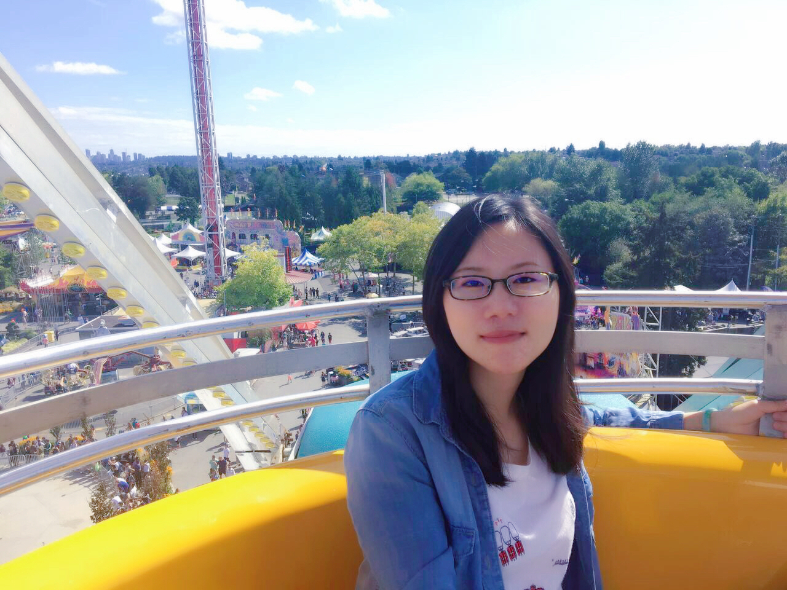

About me I am a Ph.D. Candidate in School of Mathematical Sciences at Dalian University of Technology, China. I am under the supervision of Professor Xiuping Liu. From Sep. 2015 to Sep. 2017, I joined GrUVi Lab in the School of Computing Science at Simon Fraser University (SFU), Canada, under the supervision of Professor Hao (Richard) Zhang. My visit was supported by China Scholarship Council (CSC). Before that, I received my B.Sc. in School of Mathematical Sciences from Dalian University of Technology, China. My research focuses on computer graphics, especially computational design, fabrication and shape analysis.
Publications
|  | Shuhua Li, Ali Mahdavi-Amiri, Ruizhen Hu, Han Liu, Changqing Zou, Oliver van Kaick, Xiuping Liu, Hui Huang, and Hao Zhang, "Construction and Fabrication of Reversible Shape Transforms", ACM Trans. on Graphics (Proc. SIGGRAPH ASIA 2018), 37(6). [Paper] [Supp][Video][Code][Bib] |